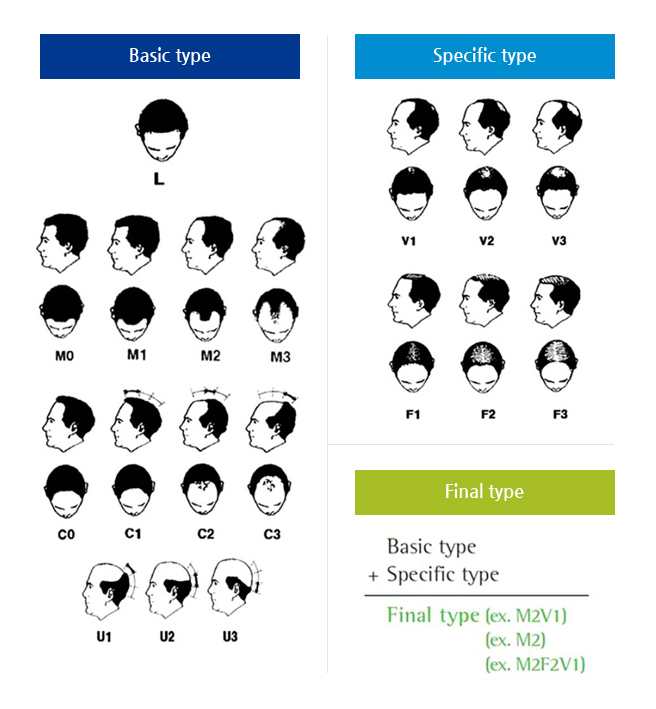

- HOME
- 탈모 치료
-
남성형 탈모
- 남성형 탈모증이란?
-
남성형 탈모증은 흔히 대머리라 부르는 질환으로, 특징적으로 앞머리와 정수리의 모발이 가늘어지고 빠지게 되며 옆머리와 뒷머리는 거의 빠지지 않는 형태의 탈모를 보입니다. 50대 이후 전체 남성의 약 절반에서 발생하며, 일반적으로 30-40대에 시작하지만 심한 경우에는 사춘기 전후에 시작하는 경우도 있습니다. 남성형 탈모는 진행의 정도에 따라 아래 그림과 같이 분류하고 있습니다.
- 증상
- 
-
남성형 탈모증의 원인
(DHT)
- DHT (dihydrotestosterone)
-
남성형 탈모증은 남성 호르몬에 의해 생기는 질환으로 유전적 소인이 있는 남성들에게 주로 나타납니다. 남성들은 사춘기가 지나면 체내에 남성호르몬인 테스토스테론이 증가하게 됩니다. 테스토스테론은 모낭에서 5-알파 환원효소에 의해 DHT (dihydrotestosterone)라는 호르몬 물질로 변화되고 이 호르몬이 탈모를 일으키게 됩니다. 남성형 탈모증의 유전적 소인이 있는 남성에서는 이러한 DHT에 의해 앞머리와 정수리의 모발이 점차 가늘어지게 되고 결국은 소실되어 모발의 밀도가 감소하게 됩니다. 남성형 탈모증은 유전되며 하나의 원인 유전자가 있는 것이 아니라 여러 개의 유전자가 복합적으로 영향을 미치는 것으로 생각됩니다. 약 20%의 환자에서는 가족력이 없이 발생하기도 합니다.
- 증상
-
- 신진대사가 느려지고 온몸의 기능 저하
- 쉽게 피로해짐
- 추위를 많이 느끼며 집중이 잘 안됨
- 기억력 감퇴
- 피부가 건조해지며 거칠어지고 색은 누렇게 변함
- 얼굴과 손발이 부음
- 식욕 감퇴, 체중 증가
- 월경량 증가 및 불규칙 양상
-
남성형 탈모증의 원인
- 남성형 탈모증의 원인
-
검사방법 : 기능검사(혈액채취), 초음파검사, 미세침흡인세포검사
치료방법 : 양성 결절인 경우 > 추적관찰
커지는 경우 혹은 악성 결절(갑상선암)인 경우 > 수술치료
- 증상
-
- 대부분 증상이 없는 경우가 많음
- 연하곤란 / 호흡곤란 / 쉰 목소리 / 기침
- 표면적으로 혹 발견